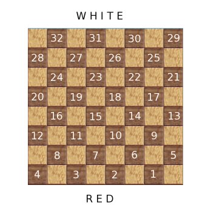
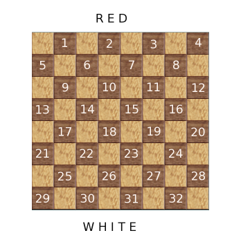
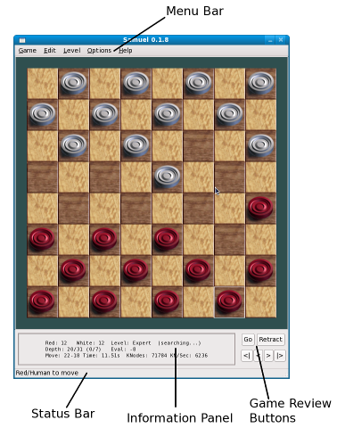
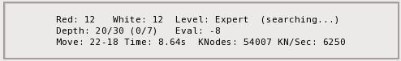

Version 0.1.1 - 30th October 2009
Samuel Online Help File
There are many draughts variants. Samuel plays the version known as English draughts (also called American checkers).
There is a standard numbering system where the squares are numbered from 1 to 32 as shown in the images below.
These numbers are used to show moves in the game information panel. They are also used when loading/saving games
in the standard format.



The image above illustrates the various areas.
Through the Options menu bar option you can set up the computer player.
The options are:
If you are playing as white against the computer you can enable the 'flip the board' feature so that the white pieces are at the bottom of the board.
The computers skill level depends on its search depth and time limit.
It can use a search depth between 1 (weakest level of play) and 52 (strongest level of play).
There are 3 preset skill levels:
There is also a user-defined skill level which allows you to set a search depth between 1 and 52.
To set the lowest level use user-defined level and set the search depth to 1.
When using a high search depth the computer will take a long time to make its move. You can set a time limit to force it to
move within a certain time.
Go into position edit to add/remove pieces from the board and to change the side to move. You can press the 'delete' key to remove all pieces and start with an empty board.
To make the board bigger hold down CTRL and + keys.
To make the board smaller hold down CTRL and - keys.
To reset the board to normal size press CTRL and 0 keys.

The information panel displays details of the computers move.
This example indicates that:
You can turn it on/off through the options on the menu bar.
The Status bar displays whose turn it is to move.
You can turn it on/off through the options on the menu bar.
Games can be loaded/saved using the File option on the menu bar.
Games are saved in the standard pdn format. The files will be saved with a .pdn extension.
pdn files include the move history and you can rewind the game with the game review buttons.
You can also copy/paste the game to/from the clipboard in the standard fen and pdn formats.
You can load games saved by other programs if they are in the standard format.
| Keys | Function |
| CTRL+N | New Game |
| CTRL+O | Load Game |
| CTRL+S | Save Game |
| CTRL+Q | Quit Game |
| CTRL+H | Display this online Help Screen |
| m | Move Now - press this to make the computer move immediately when it's taking a long time thinking |
| CTRL+C | Copy game to clipboard (in PDN format) |
| CTRL+V | Paste game from clipboard (in PDN format) |
| CTRL++ | Increase the board size |
| CTRL+- | Decrease the board size |
| CTRL+0 | Reset board size to default size |
| g | Same as the 'Go' button. Its main use is to start the game (make the computer move) when it's stopped. |
| delete | Clear the board when in position edit mode |
| r | Retract last move |
| [ | rewind 1 move |
| ] | forward 1 move |
| { | rewind to start of game |
| } | forward to end of game |
| 3 | Used for opening book. See below.. |
| 2 | Used for opening book. See below. |
| 4 | Used for opening book. See below. |
| 6 | Used for opening book. See below. |
| K | Used for opening book. See below. |
| S | Used for opening book. See below. |
The file opening.gbk contains moves for the opening book.
It comes from guicheckers pre-seeded with opening moves.
You can modify it with these commands:
When saving the opening book is saved to ~/.samuel/opening.gbk.
When loading at startup it's loaded first from ~/.samuel/opening.gbk.
If not found there it will be loaded from the same directory as the program.
After a standard install the program directory will be read only which is why
'save' always saves to ~/.samuel/opening.gbk.
Most people will not want to modify the opening book.
These are contained in the files 2pc.cdb, 3pc.cdb and 4pc.cdb.
They can be created by running the program genalldatabases.
Samuel is based on guicheckers.